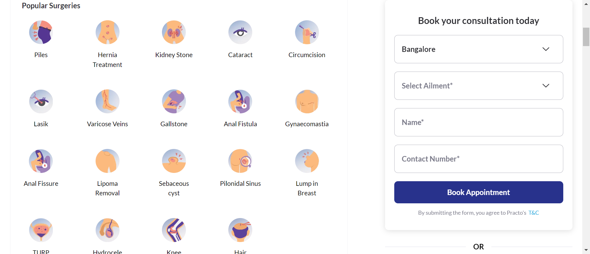

-
Selecting Location
4:59:44 PM / 00:03:00:837 Fail
Selecting Location
04.07.2024 4:59:44 PM 04.07.2024 5:02:45 PM 00:03:00:837 · #test-id=1FailSelecting Location in SearchBarstepdefinations.Hooks.setup()Given the user navigate PractoHomePageStep skippedWhen User Clear LocationSearchbarStep skippedAnd User Select required LocationStep skippedAnd Location is Selected and user sholud select DoctorsStep skippedAnd user should navigate to Category pageStep skippedWhen the user selects the Experience filterStep skippedAnd the user clicks on All filtersStep skippedAnd the user selects the Fees filterStep skippedAnd the user selects the Availability filterStep skippedAnd the user selects one sorting optionStep skippedThen the user capture first detailsStep skippedstepdefinations.Hooks.tearDown(io.cucumber.java.Scenario) -
Extracting Surgery List
5:02:45 PM / 00:00:14:670 Fail
Extracting Surgery List
04.07.2024 5:02:45 PM 04.07.2024 5:02:59 PM 00:00:14:670 · #test-id=27FailExtracting and Storing Surgery ListGiven the user navigates to the surgerylistpackage by clicking on the surgeries linkstepdefinations.Hooks.addScreenshot(io.cucumber.java.Scenario)Extracting and Storing Surgery ListWhen the user stores all surgeries in a liststepdefinations.Hooks.addScreenshot(io.cucumber.java.Scenario)Extracting and Storing Surgery ListWhen the user navigate to health and wealth Pagestepdefinations.Hooks.addScreenshot(io.cucumber.java.Scenario)When user give valid nameStep skippedWhen user give valid Organization nameStep skippedWhen user give Valid PhoneNumberStep skippedWhen user give Invalid MailIdStep skippedWhen user select required Oraganization SizeStep skippedWhen user select Interested InStep skippedWhen user Validate Schedule a demo button is disableStep skippedWhen user give valid MailIdStep skippedWhen user Validate Schedule a demo button is ableStep skippedstepdefinations.Hooks.tearDown(io.cucumber.java.Scenario)
-
org.openqa.selenium.SessionNotCreatedException
1 tests
org.openqa.selenium.SessionNotCreatedException
1 failedStatus Timestamp TestName Fail 16:59:44 PM stepdefinations.Hooks.setup() Selecting Location.Selecting Location in SearchBar.stepdefinations.Hooks.setup() -
org.openqa.selenium.remote.UnreachableBrowserException
3 tests
org.openqa.selenium.remote.UnreachableBrowserException
3 failedStatus Timestamp TestName Fail 17:02:56 PM When the user navigate to health and wealth Page Extracting Surgery List.Extracting and Storing Surgery List.When the user navigate to health and wealth PageFail 17:02:59 PM stepdefinations.Hooks.addScreenshot(io.cucumber.java.Scenario) Extracting Surgery List.Extracting and Storing Surgery List.stepdefinations.Hooks.addScreenshot(io.cucumber.java.Scenario)Fail 17:02:59 PM stepdefinations.Hooks.tearDown(io.cucumber.java.Scenario) Extracting Surgery List.Extracting and Storing Surgery List.stepdefinations.Hooks.tearDown(io.cucumber.java.Scenario) -
java.lang.NullPointerException
1 tests
java.lang.NullPointerException
1 failedStatus Timestamp TestName Fail 17:02:45 PM stepdefinations.Hooks.tearDown(io.cucumber.java.Scenario) Selecting Location.Selecting Location in SearchBar.stepdefinations.Hooks.tearDown(io.cucumber.java.Scenario)
-
@smoke
1 tests
@smoke
1 failedStatus Timestamp TestName Fail 16:59:44 PM Selecting Location in SearchBar Selecting Location.Selecting Location in SearchBar -
@regression
2 tests
@regression
2 failedStatus Timestamp TestName Fail 16:59:44 PM Selecting Location in SearchBar Selecting Location.Selecting Location in SearchBarFail 17:02:45 PM Extracting and Storing Surgery List Extracting Surgery List.Extracting and Storing Surgery List
Started
Apr 7, 2024 04:59:43 PM
Ended
Apr 7, 2024 05:02:59 PM
Features Passed
0
Features Failed
2
Features
Scenarios
Steps
Timeline
Tags
| Name | Passed | Failed | Skipped | Others | Passed % |
|---|---|---|---|---|---|
| @smoke | 0 | 1 | 0 | 0 | 0% |
| @regression | 0 | 2 | 0 | 0 | 0% |